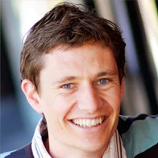
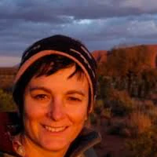

Staff, Students and Affiliates
Chief Investigators
Prof. Jodie McVernon
Professor and Director of Doherty Epidemiology
The Doherty Institute
Prof. James McCaw

Mathematical biologist and infectious diseases epidemiologist
Department of Mathematics and Statistics and Melbourne School of Population and Global Health
The University of Melbourne
Dr Natalie Carvhalo

Senior Research Fellow at the Melbourne School of Population and Global Health
The University of Melbourne
Dr Iadine Chades

Team leader, Principal Research Scientist
CSIRO
Post-doctoral Researchers
Students
Affiliated Researchers
Dr. Michael Lydeamore
Lecturer, Business Analytics
Department of Econometrics and Business Statistics, Monash University